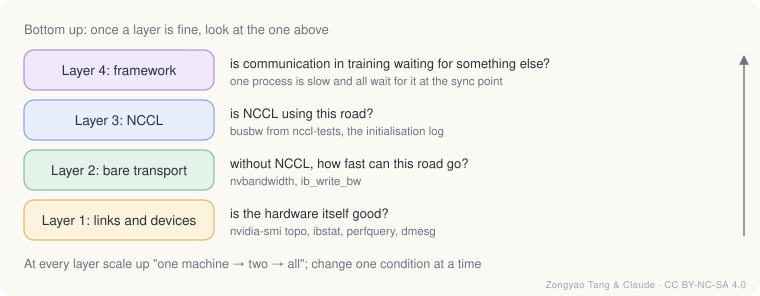

The thread: first be clear what unit communication is measured in → then work out "what it should be", so there is something to compare against → then learn to read the log NCCL prints itself, which tells you what it chose → when tracking a problem, rule things out layer by layer from the bottom up → finally, remember what the few most common faults look like. Everything in this unit can be used directly in an InfiniBand environment.
Part 6 · Collective communication and NCCL6.3 Measuring and troubleshooting communication
Translated by AI (Anthropic's Claude) from the Chinese edition. The Chinese original is the reference.
This unit answersHow do you know whether communication is slow? Where do you start when it is?
Follows 6.2 and 0.2: the same "measure first, then break it down, find the biggest part", this time applied to communication.
- Two bandwidths: algbw is what you experience, busbw is for comparing with the hardware
- First work out "what it should be", then see how far the measurement falls short
- NCCL's initialisation log answers three questions: which network it used, which road each pair of GPUs takes, how many channels it built
- Rule things out layer by layer, from the bottom up: link → bare RDMA → NCCL → framework
- A few typical faults, each with its own fingerprint
Explanation
1Two bandwidths: algbw is what you experience, busbw is for comparing with the hardware
nccl-tests reports two bandwidths for each test. Algorithm bandwidth (algbw) = data size ÷ time, the speed of this operation as its user sees it. Bus bandwidth (busbw) = algorithm bandwidth × a correction factor; it estimates the speed actually achieved on each link, can be compared directly with the bandwidth of NVLink or a network card, and does not change with the number of GPUs.
Algorithm bandwidth. The most intuitive definition: a collective operation on a block of data of size S takes time t, and algbw = S ÷ t.
Its problem is that it changes with the number of GPUs. As 6.1 worked out, in ring all-reduce each GPU sends 2(n−1)/n copies of the data. The more GPUs, the closer the amount carried on the links for the same S comes to 2S, and the lower algbw gets, even if the hardware has not changed at all. So the algbw of 2 GPUs and of 8 GPUs cannot be compared directly, nor compared directly with a link's rated bandwidth.
Bus bandwidth. Divide that factor out: since each GPU actually transferred 2(n−1)/n × S of data in time t, the actual rate on the links is
busbw = algbw × 2(n−1)/n
This number reflects the speed of the hardware bottleneck (NVLink, PCIe or the network); however many GPUs it is measured with, ideally it should be close to the bandwidth of that link.
The correction factor for each operation (from the nccl-tests documentation):
- all-reduce: 2(n−1)/n
- reduce-scatter, all-gather: (n−1)/n, exactly half of all-reduce's (as 6.1 said, each is half an all-reduce)
- broadcast, reduce: 1 (all the data has to go in or out through the root GPU, and the bottleneck is its one link)
How to use them.
- To ask "are this hardware and configuration normal": look at busbw for large messages, and compare it with the link bandwidth.
- To ask "how long does my training take to synchronise gradients each step": use algbw. For example, with 1 GB of gradients in all and busbw measured at 40 GB/s on 8 GPUs, algbw = 40 ÷ 1.75 ≈ 23 GB/s, and one synchronisation takes about 44 milliseconds.
- To compare results at different scales (2 GPUs, 8 GPUs, 64 GPUs): compare busbw. If it drops noticeably as the scale grows, scale is bringing extra problems (the collisions and congestion of 5.3).
Hands-on: run nccl-tests once and read the output
nccl-tests is a set of small programs from NVIDIA, one for each collective operation. After building, they are in the
build/directory.One machine, several GPUs:
./build/all_reduce_perf -b 8 -e 8G -f 2 -g 8
-b 8 -e 8G: message sizes from 8 bytes to 8 GB.-f 2: doubling each time.-g 8: this process uses 8 GPUs.
Several machines: use MPI to launch processes on every machine, each process using some of the GPUs. For example, two machines with 8 GPUs each:
mpirun -np 16 -H node1:8,node2:8 ./build/all_reduce_perf -b 8 -e 8G -f 2 -g 1
Each line of output is one message size; the main columns:
size: message size (bytes).time: the average time of one operation (microseconds).algbw,busbw: the two bandwidths (GB/s).#wrong: how many results failed the check; it must be 0.
These columns appear in two groups: out-of-place (input and output are different buffers) and in-place (the same buffer).
How to read the table. Look down the busbw and time columns:
- The top few lines (very small messages): busbw is very low, which is normal. Here look at
time: it barely changes with size, and is this operation's fixed latency. Inside one machine it is usually tens of microseconds; across machines it is higher. - The middle: busbw rises quickly as messages grow. Sometimes there are steps, where NCCL switches protocol or algorithm (6.2).
- The bottom few lines (hundreds of MB and up): busbw should settle on a plateau. This plateau is the number to compare with the hardware.
Some abnormal shapes:
- The plateau far below expectation: the wrong road (the next card works out the expectation, the one after reads the log).
- busbw actually falling at large messages: possibly a problem with buffers, GPU memory or congestion.
- The same command giving very different results from run to run: another job sharing the network, or an unstable link.
Run it once more with
NCCL_DEBUG=INFOadded, and you can also see which road NCCL chose.An analogyLike rating a courier line round the city: algbw is "how long it takes a parcel to reach the whole city", naturally a little slower with more stops; busbw is "the actual speed of each van on the road", which reflects the state of the roads and has nothing to do with how many stops there are.
So to judge whether hardware and configuration have a problem, look at busbw; to estimate how long one gradient synchronisation takes in training, use algbw. Do not compare the two with each other.
Builds on all-reduce = reduce-scatter + all-gatherRing all-reduce: however many GPUs there are, each GPU's traffic barely changesThe goal is throughput: samples or tokens processed per secondUsed later in First work out "what it should be", then see how far the measurement falls shortScaling efficiency: multi-GPU throughput ÷ (single-GPU throughput × number of GPUs)Case two: 8 GPUs, only 5 times the speedSourcesnccl-tests: PERFORMANCE.md- With the unit settled, something to compare against is still needed. A lone "busbw 12 GB/s" says nothing at all.
2First work out "what it should be", then see how far the measurement falls short
Before measuring, estimate an expectation: inside a machine look at the bandwidth of NVLink (or PCIe), across machines at the bandwidth of the network card for each GPU; for small messages look at latency, for large messages at the busbw plateau. A measurement reaching seventy or eighty percent of the expectation or more is generally normal; only a fraction of it means the road is wrong; only a few percent most likely means a fallback to TCP.
Inside a machine. On a machine with NVLink, the bottleneck is NVLink. 5.1 gave the figure: an H100 has 900 GB/s in total per GPU, all links and both directions added together. In ring all-reduce each GPU receives in one direction and sends in the other at the same time, so the busbw you can hope for is on the order of one direction, that is, a few hundred GB/s. The actual plateau is also limited by the number of channels and the SMs' moving capacity, and is usually below this theoretical value. The most reliable reference is known results on machines of the same model: within the same batch of machines, busbw should be close from one to the next.
On machines without NVLink, where GPUs talk over PCIe, the expectation is on the order of PCIe: from over ten to a few tens of GB/s, and strongly affected by topology (5.1).
Across machines. The bottleneck is the network card. With one 400 Gb/s card per GPU, one direction is about 50 GB/s, which is the order of the busbw ceiling per GPU; a 200 Gb/s card gives about 25 GB/s. Halve that again when two GPUs share one card.
Note one place where it is easy to misjudge: one machine with 8 GPUs measuring several hundred GB/s, and two machines with 16 GPUs measuring forty-odd GB/s, a drop of several times, is normal. As soon as one hop on the ring crosses machines, the whole ring's speed is set by that slowest hop ("the bottleneck decides everything" from 0.1).
Latency. Look at the
timeof the smallest few messages. Inside a machine it is on the order of tens of microseconds; across machines over InfiniBand it is somewhat higher, but still tens to one or two hundred microseconds. If it is in milliseconds, the traffic is going over TCP, or something is seriously wrong.How to judge the gap.
- Seventy or eighty percent of the expectation or more: normal. The remaining gap comes from protocol overheads, the number of channels and so on.
- Only about half the expectation: a common cause is using half the resources, for example only one of two network cards in use, a link running one grade slower, or GPUDirect RDMA not in use.
- Only a fraction, down to a tenth, of the expectation: the road is wrong, for example no NVLink inside the machine, or cross-machine traffic staged through main memory with the wrong NUMA placement on top.
- Only a few percent, with small-message latency in milliseconds: a fallback to TCP sockets.
As the scale grows. Measure 2, 4, 8 machines and so on separately; the busbw plateau should stay roughly level. If it gets lower the more machines there are, the problem is in the network's topology and routing (5.3), not in any one machine.
These expectations are all order-of-magnitude estimates. Once you have measured the first set of numbers in your own environment, write them in your notes: that is the most accurate baseline there is.
An analogyLike a health check: you need to know the normal range for this age first, and only then do the numbers on the lab report mean anything.
So every time you move to a new environment, the first thing is to set up a communication baseline: one number for several GPUs in one machine, one for two machines, and write them down. Later, when training gets slower, measure again and you will know whether communication is the problem.
Builds on Two bandwidths: algbw is what you experience, busbw is for comparing with the hardwareNVLink plus NVSwitch: a private line between every pair of GPUsOptimisation starts from a reproducible baseline- When expectation and measurement do not match, do not guess yet. NCCL knows what it chose, and is willing to tell you.
3NCCL's initialisation log answers three questions: which network it used, which road each pair of GPUs takes, how many channels it built
Set the environment variable NCCL_DEBUG to INFO, and NCCL prints each of its choices at initialisation: which network cards it found, which network transport it uses; which transport is used between each pair of adjacent GPUs on each channel; how many channels were built in total. This is the most direct evidence for confirming "whether it took the right road".
NCCL_DEBUG=INFO python train.py # or nccl-tests NCCL_DEBUG=INFO NCCL_DEBUG_FILE=/tmp/nccl.%h.%p.log ... # one file per process
The log is long, but there are only three kinds of thing to look for. The examples below are in a common form; the wording differs between versions.
One: which network it used. Look for lines starting with
NET/:NCCL INFO NET/IB : Using [0]mlx5_0:1/IB [1]mlx5_1:1/IB ... ; OOB ib0:10.0.0.5<0> NCCL INFO Using network IB
- The first line lists the RDMA devices it found and intends to use. Count whether they are the ones you expect;
/IBmeans the link layer is InfiniBand, while RoCE devices are marked/RoCE. - After
OOBis the interface used for the out-of-band handshake. Using network IBis the conclusion. If it saysUsing network Sockethere, it is not using RDMA, and there is no need to read further: solve this problem first.
Two: which road each pair of GPUs takes. Look for lines starting with
Channeland containingvia:NCCL INFO Channel 00/0 : 0[0] -> 1[1] via P2P/CUMEM NCCL INFO Channel 00/0 : 7[7] -> 8[0] via NET/IB/0/GDRDMA
- On either side of the arrow are the two GPUs of this hop (the rank and the GPU number on its machine).
- After
viais the transport. Inside a machine it should beP2P/…;SHMmeans this pair is not using direct device-to-device transfer. - Across machines it should be
NET/IB/…, and only withGDRDMAafter it is GPUDirect RDMA in use. JustNET/IB/0without it means staging through main memory.NET/Socketmeans TCP.
Three: how many channels were built, and whether the graphs are complete.
NCCL INFO Connected all rings NCCL INFO Connected all trees NCCL INFO 16 coll channels, ... , 16 p2p channels, ...
When initialisation hangs, look at which step the log stops at: stopping at the handshake mostly means the out-of-band interface is wrong or a port is blocked; stopping while building connections mostly means a problem in the RDMA layer.
You can look in more detail.
NCCL_DEBUG_SUBSYSchooses which subsystems' information to print. For troubleshooting topology and CPU binding, the official documentation suggests:NCCL_DEBUG=INFO NCCL_DEBUG_SUBSYS=INIT,GRAPH,ENV ...
ENVlists all the environment variables NCCL read. This one is very useful: much "inexplicable" behaviour comes from some script or image having set anNCCL_variable long ago without your knowing.Every line starting with
NCCL WARNis worth reading; they usually carry a source file name and line number, which you can match against the source map of 6.2 to find which layer the problem came from.An analogyLike the route a navigation app shows before you set off: which motorway, which exit. One look to check the route is right saves far more trouble than finding out halfway that you went the wrong way and turning back.
So when you hit a communication performance problem, the first step is always to rerun with NCCL_DEBUG=INFO and read through the initialisation part of the log. Many problems have their answer once you have read it.
Builds on The transport layer: P2P or shared memory inside a machine, IB verbs or sockets across machinesMost of the work is done once at initialisation: probe the topology, build rings and trees, connect every pair of GPUs- The first line lists the RDMA devices it found and intends to use. Count whether they are the ones you expect;
- The log has confirmed the road is right, or pointed out where it is wrong. To pin down the cause next, you need an order that neither misses anything nor gets muddled.
4Rule things out layer by layer, from the bottom up: link → bare RDMA → NCCL → framework
A communication problem may lie in any of four layers: physical links and network cards, RDMA transport, NCCL, the training framework. Each layer has test tools that do not depend on the layers above. Start from the bottom and confirm layer by layer that "this layer tested on its own is normal"; the first layer that is not normal is where the problem is.

The four layers and the question to ask at each Layer one: links and devices. The question is "is the hardware itself good".
- Inside a machine:
nvidia-smi topo -m,nvidia-smi nvlink -s, the negotiated PCIe speed (5.1). - Across machines:
ibstatfor port state and speed,perfquery -xfor error counters (5.2). - Kernel log: any Xid or network card errors in
dmesg.
Layer two: bare transport. The question is "without NCCL, how fast can this road go".
- Inside a machine:
nvbandwidthmeasures GPU-to-GPU bandwidth. - Across machines:
ib_write_bwandib_write_latmeasure RDMA bandwidth and latency between two machines; adding--use_cudabrings GPU memory in too.
If this layer cannot reach the hardware's rated figures, the problem is in the network or the drivers, and there is no need to look higher.
Layer three: NCCL. The question is "is NCCL making use of what lies beneath".
nccl-tests, together withNCCL_DEBUG=INFO.- Compare against the previous two cards: the busbw plateau against the expectation, the roads in the log against the expectation.
As NCCL's documentation puts it, only when the network tools measure as expected and NCCL does not is it NCCL's configuration's turn to be checked.
Layer four: the framework and the training itself. The question is "communication itself is fine, so why is training still slow". Common reasons:
- Communication and computation competing for the GPU (channels occupying SMs, 6.2).
- Communication not overlapped with computation (the buckets of 7.1).
- One process slowed down by data loading or something else, with all processes waiting for it at the synchronisation point. Communication then "looks" slow, but it is really waiting.
Another dimension: scale. At every layer, scale up in the order "one machine → two machines → the full set". If one machine is fine and two are not, the problem is in the cross-machine part; if two are fine and it goes wrong only at scale, the problem is in the network's topology, routing and congestion (5.3).
One discipline. Change only one condition at a time, measure again after the change, and write down the result (the baseline of 0.2). Communication problems have especially many variables; change two things at once, and you can never again tell which one had the effect.
An analogyLike the internet not working at home: first check the cable and the lights on the modem, then try whether you can reach the router, then whether other websites open, and only last suspect this particular piece of software.
So do not start by tuning NCCL's parameters or changing the training code. When a lower layer has a problem, nothing done at a higher layer helps, and it muddies the picture further.
Builds on NCCL's initialisation log answers three questions: which network it used, which road each pair of GPUs takes, how many channels it builtFirst work out "what it should be", then see how far the measurement falls shortRDMA assumes a network that almost never drops packets; InfiniBand achieves this with "credits"Split the time of one step: how much each stage takesUsed later in A few typical faults, each with its own fingerprint- Inside a machine:
- Layer-by-layer troubleshooting is the general method, but it takes time. Fortunately the common problems are few, and recognising them gives you a shortcut.
5A few typical faults, each with its own fingerprint
Most communication problems met in practice are one of a limited few: falling back to TCP; the wrong network card or interface; GPUDirect RDMA not in use; direct transfer inside the machine blocked by virtualisation settings; a link running slow or with errors; one slow node holding everyone back. Each has recognisable features in the log, the bandwidth numbers or the counters.
One: falling back to TCP.
- Symptoms: cross-machine busbw only a few percent of expectation; small-message latency in milliseconds;
Using network Socketorvia NET/Socketin the log. - Common causes: the RDMA devices not mapped into the container, or the verbs libraries missing; the limit on pinnable memory too small, so registering memory or setting up QPs fails (the log will have a warning such as
ibv_reg_mr failedoribv_create_qp failed; check withulimit -l, which should be unlimited); someone having setNCCL_IB_DISABLE=1.
Two: the wrong network card or interface.
- Symptoms: initialisation hangs or times out; or it runs, but busbw is only half (only some network cards in use); the devices listed in the log are not the ones you expect.
- Common causes: the machine is on several networks, and NCCL picked an interface for the handshake that cannot reach the other nodes; or it also took the front-end network card as a card for carrying data.
- Fix: set the handshake interface with
NCCL_SOCKET_IFNAME, and the data devices withNCCL_IB_HCA. These two are among the few variables that should be set permanently on machines with several network cards.
Three: GPUDirect RDMA not in use.
- Symptoms: cross-machine busbw clearly below the network card's bandwidth, CPU usage on the high side; cross-machine connections in the log are
NET/IBbut withoutGDRDMA. - Common causes: the
nvidia-peermemmodule not loaded; the network card and GPU not under the same PCIe switch chip (5.1, 5.2).
Four: direct transfer inside the machine blocked.
- Symptoms: busbw for several GPUs in one machine is already far below expectation, or it simply hangs; connections inside the machine in the log go through
SHM, or are P2P but slow. - Common causes: IOMMU or PCIe ACS switched on, forcing direct device-to-device transfers to detour through the CPU (5.1 has ways to check).
Five: a link running slow or with errors.
- Symptoms: slow whenever certain nodes take part, normal with a different set of nodes; or good one moment and bad the next.
- Verify: the speed in
ibstat, the error counters inperfquery, comparing rail by rail and node by node (the troubleshooting of 5.3).
Six: one slow node.
- Symptoms: the utilisation of all GPUs drops together, periodically; nccl-tests measuring communication on its own is normal, yet it is slow in training.
- Cause: synchronous training waits for the slowest process at every step. Why it is slow may have nothing to do with communication: slow data loading, the CPU taken by other processes, that GPU throttling because it is overheating.
- Verify: record each process's time per step and the time spent waiting for communication, and find the process that "everyone else is waiting for".
Seven: forgotten environment variables.
- Symptoms: behaviour differs from the defaults the documentation describes, and is fine in a different environment.
- Cause: images or launch scripts still carry things like
NCCL_ALGO,NCCL_PROTOorNCCL_BUFFSIZEset during some earlier debugging. The official documentation says plainly that debugging variables should not be left in production scripts, as they can cause worse performance, crashes or hangs. - Verify:
NCCL_DEBUG_SUBSYS=ENV, or simplyenv | grep NCCL.
Troubleshooting: training is stuck, or reports a communication timeout
Besides "slow", the other kind of problem is "hung". Look at it separately by when it happens.
Stuck right at start-up.
- Add
NCCL_DEBUG=INFOand see where the log stops. - Stopped at the handshake: the processes cannot find each other. Check that the interface
NCCL_SOCKET_IFNAMEpoints to can reach between nodes, and that the firewall lets through the port range NCCL uses. NCCL's documentation specifically mentions that an interface whose state is UP but which cannot actually reach the other nodes causes initialisation to fail or hang. - Stopped while building connections: a problem in the RDMA layer. Look for warnings starting with
ibv_; in a RoCE environment,ibv_modify_qp failedis often a wrong choice of address entry (GID). - All processes waiting: has one process never started at all (for example, it ran out of GPU memory on its side and exited long ago)?
Stuck after training for a while.
- First confirm whether a process has already died. In synchronous training, if one process exits, the rest wait for it forever. Check that the processes on every node are all there, and look at each one's last output.
- Look at the kernel log:
sudo dmesg -T | grep -i -E "xid|mlx|ib". A GPU dropping off, NVLink errors and network card links going down all leave traces here. - See where each process has stopped:
py-spy dump --pid <process id>prints the Python call stack. If everyone is stopped inside some collective operation and only one process is stopped somewhere else, that process is the cause.
A timeout, or retries exhausted.
RDMA's reliable connections retry when the other end is slow to acknowledge, and report an error when the retries run out. NCCL has two matching variables:
NCCL_IB_TIMEOUT(the length of each wait, as an exponent) andNCCL_IB_RETRY_CNT(the number of retries, 7 by default). When you see this kind of error, do not rush to raise the timeout. What it tells you is "the other end has not responded for a very long time": a link is down, the process at the other end has died, or the network is congested to an extreme. Raising the timeout only makes it report the error a bit later. Start checking from layer one (links and counters).The order for collecting information (follow it when something goes wrong; it helps analysis afterwards and helps when asking those who run the cluster for help):
- Every node's
NCCL_DEBUG=INFOlog (saved to separate files withNCCL_DEBUG_FILE). - Every node's
dmesg. - The output of
ibstatandperfquery -xfrom before and after the problem. - Which nodes and which GPUs had the problem, and whether it still happens with a different set.
An analogyLike a doctor seeing common illnesses: when the symptoms match, a few words settle the diagnosis; only when they do not is the full set of tests needed.
So first match the symptoms against this table. If one matches, verify that one directly; if none does, troubleshoot layer by layer in the order of the previous card.
Builds on Rule things out layer by layer, from the bottom up: link → bare RDMA → NCCL → frameworkGPUDirect RDMA: what is registered is not main memory but GPU memoryThe price of never dropping packets: congestion travels back along the links, and one slow spot slows a whole areaThe "distance" between two devices decides which road the data takes- Symptoms: cross-machine busbw only a few percent of expectation; small-message latency in milliseconds;
Putting it together
Communication is measured in busbw, which can be compared directly with a link's bandwidth. First estimate what it should be, then measure. If the measurement is off, read NCCL's initialisation log to confirm which network and which road it used; then rule things out layer by layer from the bottom up: link state and counters, bare RDMA bandwidth, NCCL, the framework. Most problems are one of a few typical faults: falling back to TCP, the wrong network card, GPUDirect RDMA not in use, a link running slow, one slow node.
Test yourself
Without looking back at the explanation, say it in your own words.
- What is the difference between the algbw and busbw that nccl-tests reports? Why is all-reduce's correction factor 2(n−1)/n?
- How do you estimate what the results of nccl-tests "should be"? How far off from the expectation should a measurement be before you suspect a problem?
- In the log of NCCL_DEBUG=INFO, which kinds of information should you look at first? What does each tell you?
- When troubleshooting communication, what are the four layers from bottom to top? What tool verifies each layer on its own?
- Name several common NCCL communication faults, and give the typical symptoms and the way to verify each.